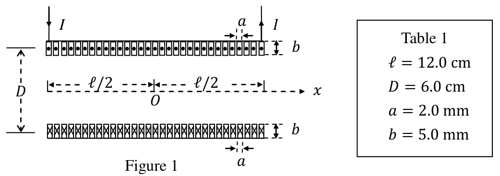
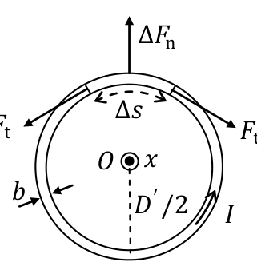
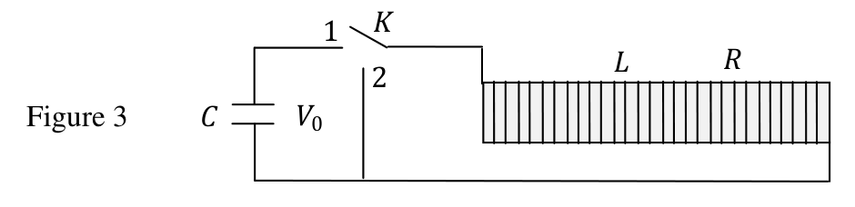

Theoretical Question 2 — Strong Resistive Electromagnets
Resistive electromagnets are magnets with coils made of a normal metal such as copper or aluminum. Modern strong resistive electromagnets can provide steady magnetic fields higher than 30 tesla. Their coils are typically built by stacking hundreds of thin circular plates made of copper sheet metal with lots of cooling holes stamped in them; there are also insulators with the same pattern. When voltage is applied across the coil, current flows through the plates along a helical path to generate high magnetic fields in the center of the magnet.
In this question we aim to assess if a cylindrical coil (or solenoid) of many turns can serve as a magnet for generating high magnetic fields. As shown in Fig. 1, the center of the magnet is at . Its cylindrical coil consists of turns of copper wire carrying a current uniformly distributed over the cross section of the wire. The coil’s mean diameter is and its length along the axial direction is . The wire’s cross section is rectangular with width and height . The turns of the coil are so tightly wound that the plane of each turn may be taken as perpendicular to the axis and . In Table 1, data specifying physical dimensions of the coil are listed.

Figure 1
| Table 1 |
|---|
| cm |
| cm |
| mm |
| mm |
In assessing if such a magnet can serve to provide high magnetic fields, two limiting factors must not be overlooked. One is the mechanical rigidity of the coil to withstand large Lorentz force on the field-producing current. The other is that the enormous amount of Joule heat generated in the wire must not cause excessive temperature rise. We shall examine these two factors using simplified models.
The Appendix at the end of the question lists some mathematical formulae and physical data which may be used if necessary.
Part A. Magnetic Fields on the Axis of the Coil
Assume so that one may regard the wire as a thin strip of width . Let be the origin of coordinates. The direction of the current flow is as shown in Fig. 1.
(a) Find the -component of the magnetic field on the axis of the coil as a function of when the steady current passing through the coil is . [1.0 point]
(b) Find the steady current passing through the coil if is T. Use data given in Table 1 when computing numerical values. [0.4 point]
Part B. The Upper Limit of Current
In Part B, we assume the length of the coil is infinite and . Consider the turn of the coil located at . The magnetic field exerts Lorentz force on the current passing through the turn. Thus, as Fig. 2 shows, a wire segment of length is subject to a normal force which tends to make the turn expand.

Figure 2
(c) Suppose that, when the current is , the mean diameter of the expanded coil remains at a constant value larger than , as shown in Fig. 2.
Find the outward normal force per unit length . [1.2 point]
Find the tension acting along the wire. [0.6 point]
(d) Neglect the coil’s acceleration during the expansion. Assume the turn will break when the wire’s unit elongation (i.e. tensile strain or fractional change of the length) is 60 % and tensile stress (i.e. tension per unit cross sectional area of the unstrained wire) is . Let be the current at which the turn will break and the corresponding magnetic field at the center .
Find an expression for and then calculate its value. [0.8 point]
Find an expression for and then calculate its value. [0.4 point]
Part C. The Rate of Temperature Rise
When the current is kA and the temperature of the coil is K, assume that the resistivity, the specific heat capacity at constant pressure, and the mass density of the wire of the coil are, respectively, given by , and .
(e) Find an expression for the power density (i.e. power per unit volume) of heat generation in the coil and then calculate its value. Use data in Table 1. [0.5 point]
(f) Let be the time rate of change of temperature in the coil. Find an expression for and then calculate its value. [0.5 point]
Part D. A Pulsed-Field Magnet
If the large current needed for a strong magnet lasts only for a short time, the temperature rise caused by excessive Joule heating may be greatly reduced. This idea is employed in a pulsed-field magnet.
Thus, as shown in Fig. 3, a capacitor bank of capacitance charged initially to a potential is used to drive the current through the coil. The circuit is equipped with a switch . The inductance and resistance of the circuit are assumed to be entirely due to the coil. The construct and dimensions of the coil are the same as given in Fig. 1 and Table 1. Assume , , and to be independent of temperature and the magnetic field is the same as that of an infinite solenoid with .

Figure 3
(g) Find expressions for the inductance and resistance . [0.6 point]
Calculate the values of and . Use data given in Table 1. [0.4 point]
(h) At time , the switch is thrown to position 1 and the current starts flowing. For , the charge on the positive plate of the capacitor and the current entering the positive plate are given by
Q(t) = \frac{CV_0}{\sin \theta_0} e^{-\alpha t} \sin(\omega t + \theta_0), \tag{1}
I(t) = \frac{dQ}{dt} = \left(\frac{-\alpha}{\cos \theta_0}\right) \frac{CV_0}{\sin \theta_0} e^{-\alpha t} \sin \omega t, \tag{2}
in which and are positive constants and is given by
\tan \theta_0 = \frac{\omega}{\alpha}, \qquad 0 < \theta_0 < \frac{\pi}{2}. \tag{3}
Note that, if is expressed as a function of a new variable , then and its time derivative are identical in form except for an overall constant factor. The time derivative of may therefore be obtained similarly without further differentiations.
Find and in terms of , , and . [0.8 point]
Calculate the values of and when is mF. [0.4 point]
(i) Let be the maximum value of for . Find an expression for . [0.6 point]
If mF, what is the maximum value of the initial voltage of the capacitor bank for which will not exceed found in Problem (d)? [0.4 point]
(j) Suppose the switch is moved instantly from position 1 to 2 when the absolute value of the current reaches . Let be the total amount of heat dissipated in the coil from to and the corresponding temperature increase of the coil. Assume the initial voltage takes on the maximum value obtained in Problem (i) and the electromagnetic energy loss is only in the form of heat dissipated in the coil.
Find an expression for and then calculate its value. [1.0 point]
Find an expression for and then calculate its value. Note that the value for must be compatible with the assumption of constant and . [0.4 point]
Appendix
-
-
-
permeability of free space
Fonte: Testo (PDF) — p.1
Topic: Electromagnetism, Circuits, Elasticity & Materials Metodi: Biot-Savart Law, Lorentz Force Analysis, Stress-Strain Analysis, Differential Equations Competenze: Mathematical Modeling, Physical Reasoning, Unit Conversion Objects: Solenoid, Wire, Capacitor, Switch
Domanda teorica 2 Forti elettromagneti resistenti
L’elettromagneto resistente è un magneto con bobine di un metallo normale come il rame o l’alluminio. I moderni elettromagneti resistenti forti possono fornire campi magnetici stabili superiori a 30 tesla. Le loro bobine sono tipicamente costruite impiandando centinaia di sottili lastre circolari di lamiera di rame con molti buchi di raffreddamento stampati in esse; ci sono anche isolanti con lo stesso schema. Quando si applica una tensione attraverso la bobina, la corrente scorre attraverso le piastre lungo un percorso elicico per generare alti campi magnetici nel centro del magnete.
In questa domanda si intende valutare se una bobina cilindrica (o solenoide) di molte giri può servire da magnete per generare campi magnetici elevati. Come mostrato nella figura. 1, il centro del magnete è a . La sua bobina cilindrica è costituita da giri di filo di rame con corrente uniformemente distribuita sulla sezione trasversale del filo. Il diametro medio della bobina è e la sua lunghezza lungo la direzione asiale è . La sezione trasversale del filo è rettangolare, con larghezza e altezza . Le curve della bobina sono così strettamente rotte che il piano di ciascuna curva può essere considerato perpendicolare all’asse e . Nella tabella 1 sono elencati i dati specifici delle dimensioni fisiche della bobina.
Figura 1
| ∙ ∙ Tavola 1 ∙ |
|---|
| cm |
| cm |
| mm |
| mm |
Nel valutare se un tale magnete possa servire a fornire campi magnetici elevati, non si devono trascurare due fattori limitanti. Uno è la rigidità meccanica della bobina per resistere a una grande forza di Lorentz sulla corrente prodotta nel campo. L’altro è che l’enorme quantità di calore Joule generato nel filo non deve causare un aumento eccessivo della temperatura. Esamineremo questi due fattori utilizzando modelli semplificati.
L’appendice alla fine della domanda elenca alcune formule matematiche e dati fisici che possono essere utilizzati se necessario.
Parte A. Campo magnetico sull’asse della bobina
Supponiamo in modo da considerare il filo come una sottile striscia di larghezza . La fonte delle coordinate è . La direzione del flusso corrente è mostrata nella figura. 1.
**(a) ** Trova la componente del campo magnetico sull’asse della bobina come funzione di quando la corrente costante che attraversa la bobina è . [1,0 punto]
**(b) ** Trova la corrente fissa che passa attraverso la bobina se è T. Utilizzare i dati di cui alla tabella 1 per calcolare i valori numerici. [0,4 punto]
Parte B. Il limite superiore della corrente
Nella parte B, supponiamo che la lunghezza della bobina sia infinita e . Considerare la rotazione della bobina situata a . Il campo magnetico esercita la forza di Lorentz sulla corrente che passa attraverso la curva. Così, come Fig. 2 indica che un segmento di filo di lunghezza è soggetto a una forza normale che tende a far espandere la curva.
Figura 2
**(c) ** Supponiamo che, quando la corrente è , il diametro medio della bobina ampliata rimanga a un valore costante maggiore di , come mostrato nella figura. 2.
Trova la forza normale esterna per lunghezza unitaria . [1,2 punto]
Trova la tensione che agisce lungo il filo. [0,6 punto]
**(d) ** Trascurare l’accelerazione della bobina durante l’espansione. Supponiamo che la curva si rompa quando l’allungamento unitario del filo (cioè tensione di trazione o variazione frazionaria della lunghezza) è del 60% e tensione di trazione (cioè tensione per unità di superficie trasversale del filo non tenso) è . Let be the current at which the turn will break and the corresponding magnetic field at the center .
Trova un’espressione per e quindi calcola il suo valore. [0,8 punto]
Trova un’espressione per e quindi calcola il suo valore. [0,4 punto]
Parte C. Il tasso di aumento della temperatura
Quando la corrente è kA e la temperatura della bobina è K, supponiamo che la resistività, la capacità termica specifica a pressione costante e la densità di massa del filo della bobina siano, rispettivamente, dati da , e .
**(e) ** Trova un’espressione per la densità di potenza ** (cioè potenza per unità di volume) della produzione di calore nella bobina e quindi calcolare il suo valore. Utilizzare i dati riportati nella tabella 1. [0,5 punto]
**(f) ** deve essere il tasso temporale di variazione della temperatura della bobina. Trova un’espressione per e quindi calcola il suo valore. [0,5 punto]
Parte D. Un magnete a campo pulsato
Se la corrente elevata necessaria per un magnete forte dura solo per un breve periodo, l’aumento della temperatura causato da un eccessivo riscaldamento Joule può essere notevolmente ridotto. Questa idea è impiegata in un magnete a campo pulsato **.
Così, come si vede in Figura 1. 3, per guidare la corrente attraverso la bobina viene utilizzata una banca di condensatori di capacità caricata inizialmente a un potenziale . Il circuito è dotato di un interruttore . Si presume che l’induttanza e la resistenza del circuito siano interamente dovute alla bobina. La struttura e le dimensioni della bobina sono le stesse di quelle riportate nella figura. 1 e tabella 1. Supponiamo che , e siano indipendenti dalla temperatura e che il campo magnetico sia lo stesso di un solenoide infinito con .
Figura 3
**(g) ** Trova espressioni per l’induzione e la resistenza . [0,6 punto]
Calcolare i valori di e . Utilizzare i dati riportati nella tabella 1. [0,4 punto]
**(h) ** Al momento , il interruttore viene gettato alla posizione 1 e la corrente inizia a fluire. Per , la carica sulla piastra positiva del condensatore e la corrente che entra nella piastra positiva sono indicate da:
Q(t) = \frac{CV_0}{\sin \theta_0} e^{-\alpha t} \sin(\omega t + \theta_0), \tag{1}
I(t) = \frac{dQ}{dt} = \left(\frac{-\alpha}{\cos \theta_0}\right) \frac{CV_0}{\sin \theta_0} e^{-\alpha t} \sin \omega t, \tag{2}
in cui e sono costanti positive e è dato da
\tan \theta_0 = \frac{\omega}{\alpha}, \qquad 0 < \theta_0 < \frac{\pi}{2}. \tag{3}
Si noti che, se è espressa come funzione di una nuova variabile , allora e la sua derivata temporale sono identici nella forma, tranne per un fattore costante complessivo. La derivata temporale di può quindi essere ottenuta in modo simile senza ulteriori differenziazioni.
Trova e in termini di , e . [0,8 punto]
Calcolare i valori di e quando è mF. [0,4 punto]
**(i) ** deve essere il valore massimo di per . Trova un’espressione per . [0,6 punto]
Se mF, qual è il valore massimo della tensione iniziale della banca condensatore per la quale non supererà riscontrato nel problema (d)? [0,4 punto]
**(j) ** Supponiamo che il switch sia spostato istantaneamente dalla posizione 1 alla posizione 2 quando il valore assoluto della corrente raggiunge . Il è la quantità totale di calore dissipato nella bobina da a e l’aumento di temperatura corrispondente della bobina. Supponiamo che la tensione iniziale assume il valore massimo ottenuto nel problema (i) e che la perdita di energia elettromagnetica sia solo sotto forma di calore dissipato nella bobina.
Trova un’espressione per e quindi calcola il suo valore. [1,0 punto]
Trova un’espressione per e quindi calcola il suo valore. Si noti che il valore di deve essere compatibile con l’ipotesi di costanti e . [0,4 punto]
Appendice
-
-
-
permeabilità dello spazio libero
Fonte: Testo (PDF) — p.1
Topic: Electromagnetism, Circuits, Elasticity & Materials Metodi: Biot-Savart Law, Lorentz Force Analysis, Stress-Strain Analysis, Differential Equations Competenze: Mathematical Modeling, Physical Reasoning, Unit Conversion Objects: Solenoid, Wire, Capacitor, Switch